# Basics
library(tidyverse)
library(patchwork)
library(knitr)
library(here)
# Analysis-specific
library(Seurat)
library(Matrix)
library(scales)8. Creating the astrocyte-junction Seurat
About this analysis
The nuclei in this project were sequenced twice: half of each barcoded library with short-read and half with long-read sequencing. Scripts 01-07 analysed the short-read data. This script (together with 09 and 10) uses the long-read data to look at exon junctions: places where a read goes from one exon to the next on the reference genome, where each junction is stored as a string chr:start:end. We created a junction count matrix, in which each each column is a nucleus and each row is a junction, which can easily be turned into a Seurat object (a regular Seurat object has the genes as rows, instead of junctions). Because the nuclei are the same as in the short-read data, I can transfer the short-read annotation and dimensionality reductions to the junction data.
The script has two parts:
- Junction matrix and QC. I load the junction count matrix, filter junctions, compute per-nucleus QC metrics (including the fraction of reads from known / novel junctions), filter nuclei and store the result as a Seurat object. The code of this part was originally written by [name]; I rewrote it to understand how it works.
- Astrocyte selection and gene-specific preprocessing. I select the astrocytes (the barcodes of the short-read astrocyte object), transfer the cluster
annotation, PCA and UMAP, filter junctions again within astrocytes and then create one Seurat object per gene of interest. These are normalised with TF-IDF (junction matrices are even sparser than gene expression matrices) and stored for scripts 09 (differential expression between clusters) and 10 (pseudobulk differential expression, ALS vs control).
Disclaimer: the code within part 1 this script was actually not written by me: I recieved an Rscript with this code from Tom van Schaik. I did convert all steps to a Quarto format and feel like I fully understand what is happening, but I do not claim credit for this code.
Preparation
Prerequisites
This script was run with the conda environment r_scrnaseq_core.
Packages
Directories
# Get string of home directory. I used the here package, which sets the home
# directory when loading library(here)
dir_home <- here::here()
## Data directories
dir_raw <- file.path(dir_home, "data/raw")
dir_data <- file.path(dir_home, "data/processed")
dir_temp <- file.path(dir_home, "data/temporary")
## Results directories
# Create subfolders with the name of this script, so all figures/tables of
# this script are in the same place
folder_name <- knitr::current_input(dir = FALSE)
folder_name <- str_remove(folder_name, "\\.\\w*$")
dir_fig <- file.path(dir_home, "results/figures", folder_name)
dir.create(dir_fig, recursive = TRUE, showWarnings = FALSE)
dir_tab <- file.path(dir_home, "results/tables", folder_name)
dir.create(dir_tab, recursive = TRUE, showWarnings = FALSE)
## Manuscript figure directory
# rds/grob objects for report figures land here, to be assembled by
# scripts/11_assemble_manuscript_figures.qmd
dir_man <- file.path(dir_home, "results/figures/manuscript")Defining variables
This code block defines variables to be used throughout the rest of the document. If someone ever wants to run these scripts with different variables, they can easily change it here. I’ll substantiate any choices here
set.seed(42)
## Input files -----------------------------------------------------------------
dir_longread <- file.path(dir_raw, "longread")
file_cell_meta <- file.path(dir_longread, "cell_metadata.tsv.gz")
file_junc_feat <- file.path(dir_longread, "junction_features.tsv.gz")
# Short-read astrocyte Seurat object (output of the short-read clustering)
file_sr_astro <- file.path(dir_data, "seu_shortread_astros_clustered.rds")
## Output files ----------------------------------------------------------------
# Checkpoint after part 1 (all cell types, filtered)
file_rds_filtered <- file.path(
dir_data,
"junction_seurat_allcelltypes_filtered.rds"
)
# The gene-specific objects are written inside the gene loop as
# data/processed/junction_seurat_<gene>.rds
## Variables used throughout ---------------------------------------------------
# Column with the sample (donor) identifier. Used for grouping in QC plots
group_var <- "AnonymousID"
# Column in the short-read object with the astrocyte cluster annotation
annotation_var <- "annotation"
# Reductions to transfer from the short-read object
reductions_to_transfer <- c("pca", "umap")
## Part 1: junction matrix and QC ----------------------------------------------
project_id <- "JunctionMatrix"
# Junction filtering
min_junc_cells <- 5 # minimal number of cells in which a junction is detected
min_junc_reads <- 10 # minimal total number of reads of a junction
# Cell filtering
min_reads <- 10 # minimal total junction reads (nCount_RNA) per cell
max_reads <- 5000000 # maximal total junction reads per cell
min_junctions <- 10 # minimal number of junctions (nFeature_RNA) per cell
max_junctions <- 500000 # maximal number of junctions per cell
# Annotation status of junctions (column annotation_status in junction_features)
annotation_statuses <- c("known", "donor_known", "acceptor_known", "novel")
status_colours <- c(
known = "#1B7837",
donor_known = "#A6D96A",
acceptor_known = "#FEE08B",
novel = "#D7191C"
)
# Metrics shown in the QC violin plots
qc_features <- c(
"nFeature_RNA", "nCount_RNA",
"pct_known", "pct_novel",
"pct_donor_known", "pct_acceptor_known",
"pct_canonical"
)
## Part 2: astrocytes and gene-specific objects --------------------------------
# Genes of interest.
# NOTE: keep this list in sync with 09 and 10!
genes <- c("GFAP", "ANXA11", "CRYAB")
# Minimal number of reads of the specific gene for a cell to be kept
min_cell_gene <- 1
# Normalisation method: "tfidf" (default, used by all downstream scripts) or
# "lognorm" (Seurat's NormalizeData). The method is stored in seu@misc.
norm_method <- "tfidf"
tfidf_scale_factor <- 1e4Helper functions
Click here to view the helper functions of this document
theme_quarto() and theme_manuscript()
I created my own themes to add to figures. theme_quarto() is used to add themes to figures as displayed in the Quarto document and saved to disk as .pdf or .png. theme_manuscript() is used to add themes to figures as they will end up in the manuscript. I can already add arguments with theme() or specific themes (e.g. theme_classic(), my personal favourite) to plots; adding theme() afterwards keeps whatever was added in theme() before it, unless I specify that arugment here - that’s why I allowed to specify some things within my functions as well.
theme_quarto <- function(
legend_position = "right",
plot_title = element_blank()
) {
theme(
plot.title = plot_title,
legend.position = legend_position
)
}
theme_manuscript <- function(
legend_position = "none",
plot_title = element_blank(),
axis_title_size = 8,
axis_text_size = 6
) {
theme(
plot.title = plot_title,
legend.position = legend_position,
axis.title = element_text(size = axis_title_size),
axis.text = element_text(size = axis_text_size),
legend.key.size = unit(0.4, "cm"),
legend.text = element_text(size = 8),
legend.title = element_text(size = 9)
)
}save_plot()
This document displays all the figures I make, but I also want them saved to disk — both as .png and .pdf. I only need to provide the ggplot object, a filename (without extension), and optionally the width and height of the figure and additional arguments put into themes.
The figures for my written report contain subfigures spread across multiple scripts. Since I want to assemble these panel figures via R code rather than by hand, save_plot() can also optionally save the plot object itself to disk as an .rds file, for a final script to later combine with patchwork. Set figure to the name the figure should carry in the report (e.g. "SF1A") to trigger this; leave it NULL (the default) to just save the .png/.pdf as normal.
A live ggplot object carries its underlying data along with it — for plots built from large Seurat objects, this can balloon the saved file to gigabytes. To avoid this, save_plot() converts the object to a grob (a static, pre-rendered drawing, with no data attached) before saving it as .rds. This is controlled by the grob argument, and defaults to TRUE, since converting a small plot costs nothing but forgetting to convert a large one is expensive. Set grob = FALSE only if a later step specifically needs the original, live ggplot object rather than its rendered form.
save_plot <- function(
p, filename,
width = 10, height = 6,
figure = NULL, grob = TRUE, apply_theme = TRUE,
add_tag = TRUE, tag_text_size = 14,
legend_pos_manuscript = "none"
) {
## Save image on disk as png and pdf
# Add Quarto-specific theme, unless the plot has its own custom theme
if (apply_theme) {
p_image <- p + theme_quarto()
} else {
p_image <- p
}
file_png <- file.path(dir_fig, paste0(filename, ".png"))
ggsave(file_png, p_image, width = width, height = height, dpi = 150)
file_pdf <- file.path(dir_fig, paste0(filename, ".pdf"))
ggsave(file_pdf, p_image, width = width, height = height, dpi = 150)
## Save the ggplot object on disk as an rds file
if (!is.null(figure)) {
# Add tag if needed
if (add_tag) {
tag <- str_extract(figure, "[A-Z]$")
p <- p +
labs(tag = tag) +
theme(
plot.tag = element_text(
face = "bold",
size = tag_text_size,
hjust = 0, vjust = 0
)
)
}
# Add manuscript-specific theme, unless the plot has its own custom theme
if (apply_theme) {
p <- p + theme_manuscript(legend_position = legend_pos_manuscript)
}
file_rds <- file.path(dir_man, paste0(figure, ".rds"))
# Convert the object to a grob if needed
if (grob) {
p <- ggplotGrob(p)
}
# Save on disk
saveRDS(p, file_rds)
}
}print_tabset()
Quarto cannot cross-reference figures that are made inside a loop. To still display the plots of a loop in this document, I collect them in a named list and show them as tabs with print_tabset(). The names of the list become the tab titles. It also accepts data frames (shown as a table). This function writes raw Quarto markdown, so the chunk that calls it needs the chunk option #| output: asis. heading_level should be one deeper than the heading above the chunk.
print_tabset <- function(obj_list, heading_level = 3) {
cat("::: {.panel-tabset}\n\n")
for (nm in names(obj_list)) {
cat(strrep("#", heading_level), " ", nm, "\n\n", sep = "")
obj <- obj_list[[nm]]
if (inherits(obj, "ggplot")) {
print(obj)
} else if (is.data.frame(obj)) {
cat(knitr::kable(obj, format = "pipe"), sep = "\n")
}
cat("\n\n")
}
cat(":::\n\n")
}Part 1: Junction matrix and QC
Loading the junction count matrix
The junction count matrix was produced by build_junction_matrix.py (by [name]) and has the 10X format. Setting gene.column = 1 tells Read10X() that the first column of the features file contains the row names, which here are the junction IDs.
cat("Loading junction matrix from:", dir_longread, "\n")Loading junction matrix from: /path/to/folder/projects/snrna_astros_shortread_postQC/data/raw/longread counts <- Read10X(dir_longread, gene.column = 1)
cat(" Raw matrix:", nrow(counts), "junctions x", ncol(counts), "barcodes\n") Raw matrix: 513692 junctions x 457124 barcodesJunction-level filtering
Many junctions are only seen in a handful of reads or nuclei. Before creating the Seurat object, I examine how junctions are distributed over total reads and number of nuclei, and then remove junctions which are detected in fewer than min_junc_cells nuclei or have fewer than min_junc_reads reads in total.
junc_total_reads <- Matrix::rowSums(counts)
junc_cell_count <- Matrix::rowSums(counts > 0)
junc_rank_reads_df <- tibble(
total_reads = sort(junc_total_reads, decreasing = TRUE)
) |>
mutate(rank = row_number())
junc_rank_cells_df <- tibble(
cell_count = sort(junc_cell_count, decreasing = TRUE)
) |>
mutate(rank = row_number())p_junc_rank_reads <- ggplot(junc_rank_reads_df, aes(rank, total_reads)) +
geom_line(linewidth = 0.7, colour = "#1565C0") +
geom_hline(yintercept = min_junc_reads, linetype = "dashed", colour = "grey40") +
annotate(
"text",
x = 1, y = min_junc_reads * 1.3,
label = paste0("min_junc_reads = ", min_junc_reads),
hjust = 0, size = 3, colour = "grey30"
) +
scale_x_log10(labels = label_comma()) +
scale_y_log10(labels = label_comma()) +
labs(x = "Junction rank", y = "Total reads")
save_plot(p_junc_rank_reads, "junction_rank_reads", width = 7, height = 6)
p_junc_rank_reads + theme_quarto()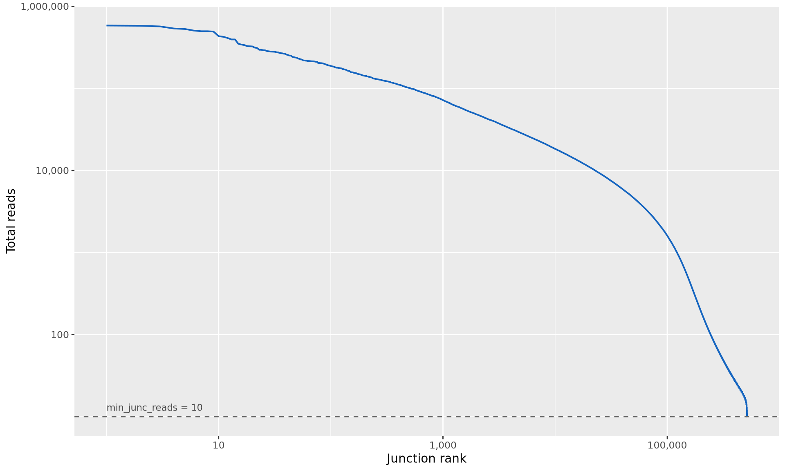
p_junc_rank_cells <- ggplot(junc_rank_cells_df, aes(rank, cell_count)) +
geom_line(linewidth = 0.7, colour = "#1565C0") +
geom_hline(yintercept = min_junc_cells, linetype = "dashed", colour = "grey40") +
annotate(
"text",
x = 1, y = min_junc_cells * 1.3,
label = paste0("min_junc_cells = ", min_junc_cells),
hjust = 0, size = 3, colour = "grey30"
) +
scale_x_log10(labels = label_comma()) +
scale_y_log10(labels = label_comma()) +
labs(x = "Junction rank", y = "Nuclei in which junction is detected")
save_plot(p_junc_rank_cells, "junction_rank_cells", width = 7, height = 6)
p_junc_rank_cells + theme_quarto()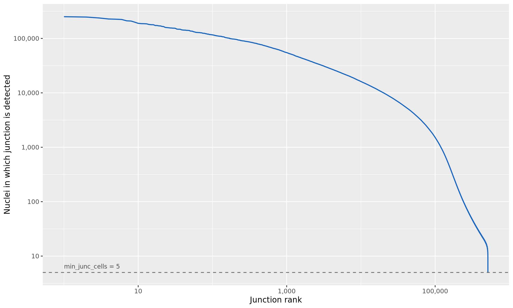
cat(
"Filtering junctions (min_junc_cells = ", min_junc_cells,
", min_junc_reads = ", min_junc_reads, ")\n", sep = ""
)Filtering junctions (min_junc_cells = 5, min_junc_reads = 10)junc_keep <- junc_total_reads >= min_junc_reads & junc_cell_count >= min_junc_cells
cat(
" ", nrow(counts), " -> ", sum(junc_keep), " junctions (",
round(sum(junc_keep) / nrow(counts) * 100, 1), "% retained)\n", sep = ""
) 513692 -> 513692 junctions (100% retained)counts <- counts[junc_keep, , drop = FALSE]Creating the Seurat object
cat("Creating Seurat object...\n")Creating Seurat object...seu <- CreateSeuratObject(
counts = counts,
project = project_id,
min.cells = 1,
min.features = 1
)
cat(" ", ncol(seu), " cells x ", nrow(seu), " junctions\n", sep = "") 457114 cells x 513692 junctions# The counts matrix is now stored inside the Seurat object, so remove the copy
# to help keep the SLURM job memory low
rm(counts); gc() used (Mb) gc trigger (Mb) max used (Mb)
Ncells 5024491 268.4 7506507 400.9 7506507 400.9
Vcells 1293342590 9867.5 4508415811 34396.5 4700112265 35859.1Adding metadata
Cell metadata
Place metadata, but only if the column does not exist yet.
# CHANGE compared to the R script: the R script silently skipped this step if
# the file did not exist. Now it stops, as the rest of the script needs
# group_var (AnonymousID).
stopifnot(file.exists(file_cell_meta))
cat("Loading cell metadata from:", file_cell_meta, "\n")Loading cell metadata from: /path/to/folder/projects/snrna_astros_shortread_postQC/data/raw/longread/cell_metadata.tsv.gz meta <- read.table(
file_cell_meta, header = TRUE, sep = "\t",
stringsAsFactors = FALSE, check.names = FALSE
)
# Make barcodes the rownames, remove the barcode variable
if ("barcode" %in% colnames(meta)) {
rownames(meta) <- meta[["barcode"]]
meta[["barcode"]] <- NULL
}
# Check whether barcodes correspond between the Seurat object and cell metadata
shared <- intersect(colnames(seu), rownames(meta))
cat(" ", length(shared), " / ", ncol(seu), " barcodes matched in metadata\n", sep = "") 457114 / 457114 barcodes matched in metadatastopifnot(length(shared) > 0)
# Add the metadata columns which are not yet in the Seurat object
new_cols <- setdiff(colnames(meta), colnames(seu@meta.data))
seu <- AddMetaData(seu, metadata = meta[shared, new_cols, drop = FALSE])
cat(" Added columns:", paste(new_cols, collapse = ", "), "\n") Added columns: AnonymousID, SCD_ID, Gender, Age_at_death, Genotype, Duration_of_Disease_after_Diagnosis_mo, primary_site_of_onset, pTDP.43.Stage, disease_family, disease.subtype, RIN.tissue.selected, percent.mt, RNA_snn_res.0.5, seurat_clusters, predicted.id_cellType, prediction.score.max_cellType, predicted.id_cellClass, prediction.score.max_cellClass, STMN2CE_junction_reads, STMN2_status, nuclear_fraction, predicted.id_coarse_celltype_mouse, prediction.score.max_coarse_celltype_mouse, predicted.id_celltype_mouse, prediction.score.max_celltype_mouse, predicted.id_refined_celltype_mouse, prediction.score.max_refined_celltype_mouse, predicted.id_coarse_allen_cellclass, prediction.score.max_allen_cellclass, predicted.id_coarse_allen_subclass, prediction.score.max_allen_subclass, predicted.id_coarse_allen_group, prediction.score.max_allen_group # Add a condition column with ALS vs Ctrls, as this does not yet exist
seu@meta.data <- seu@meta.data |>
mutate(
condition = ifelse(
str_detect(AnonymousID, "Ctrl") == TRUE,
"Ctrl",
"ALS"
)
)
# Stop if the variable we group by is not in the metadata
# (I group by AnonymousID, so it should be fine)
stopifnot(group_var %in% colnames(seu@meta.data))Junction annotation status
junction_features.tsv.gz contains information per junction, including whether the junction (or its donor / acceptor site) is already annotated (annotation_status) and whether it is canonical. I use this to calculate, per nucleus, which percentage of its reads comes from known, partially known, novel and canonical junctions. junc_meta is also used in part 2 of this script, to find the junctions of a gene.
stopifnot(file.exists(file_junc_feat))
cat("Loading junction features from:", file_junc_feat, "\n")Loading junction features from: /path/to/folder/projects/snrna_astros_shortread_postQC/data/raw/longread/junction_features.tsv.gz junc_meta <- read.table(
file_junc_feat, header = TRUE, sep = "\t",
stringsAsFactors = FALSE, check.names = FALSE
)
if ("canonical" %in% colnames(junc_meta)) {
junc_meta$canonical <- as.logical(junc_meta$canonical) # was <chr>
}
rownames(junc_meta) <- junc_meta$junction_id
# Only keep junctions which are in the Seurat object
junc_meta <- junc_meta[intersect(rownames(seu), rownames(junc_meta)), , drop = FALSE]
cat(" ", nrow(junc_meta), " / ", nrow(seu), " junctions in annotation table\n", sep = "") 513293 / 513692 junctions in annotation tablecat("Computing per-cell annotation fractions...\n")Computing per-cell annotation fractions...mat <- GetAssayData(seu, layer = "counts")
total_reads <- Matrix::colSums(mat)
for (status in annotation_statuses) {
# Junction IDs with this annotation status
jids <- rownames(junc_meta)[
!is.na(junc_meta$annotation_status) & junc_meta$annotation_status == status
]
jids <- intersect(jids, rownames(mat))
status_reads <- if (length(jids) > 0) {
Matrix::colSums(mat[jids, , drop = FALSE])
} else {
rep(0, ncol(mat))
}
seu[[paste0("pct_", status)]] <- status_reads / total_reads * 100
}
# Same for canonical junctions
canonical_jids <- rownames(junc_meta)[
!is.na(junc_meta$canonical) & junc_meta$canonical
]
canonical_jids <- intersect(canonical_jids, rownames(mat))
canonical_reads <- if (length(canonical_jids) > 0) {
Matrix::colSums(mat[canonical_jids, , drop = FALSE])
} else {
rep(0, ncol(mat))
}
seu[["pct_canonical"]] <- canonical_reads / total_reads * 100
pct_cols <- c(paste0("pct_", annotation_statuses), "pct_canonical")
for (col in pct_cols) {
cat(" Median", col, ":", round(median(seu@meta.data[[col]], na.rm = TRUE), 1), "\n")
} Median pct_known : 98
Median pct_donor_known : 0.5
Median pct_acceptor_known : 0.5
Median pct_novel : 0.9
Median pct_canonical : 99.2 rm(mat, total_reads); gc() used (Mb) gc trigger (Mb) max used (Mb)
Ncells 5584683 298.3 10610768 566.7 7506507 400.9
Vcells 1345622952 10266.3 4328143179 33021.2 4700112265 35859.1Pre-filter QC
Before filtering nuclei, I examine the QC metrics per sample. First violin plots of all metrics (shown as tabs, one plot per metric; all plots are also saved to disk).
qc_vln_pre <- map(
qc_features,
\(feature) {
VlnPlot(seu, features = feature, group.by = group_var, pt.size = 0) +
theme(legend.position = "none")
}
) |>
set_names(qc_features)
# Save every plot on disk (they have a custom title, so no theme is added)
walk2(
qc_vln_pre, names(qc_vln_pre),
\(p, feature) {
save_plot(p, paste0("violin_prefilter_", feature),
width = 8, height = 5, apply_theme = FALSE)
}
)
print_tabset(qc_vln_pre)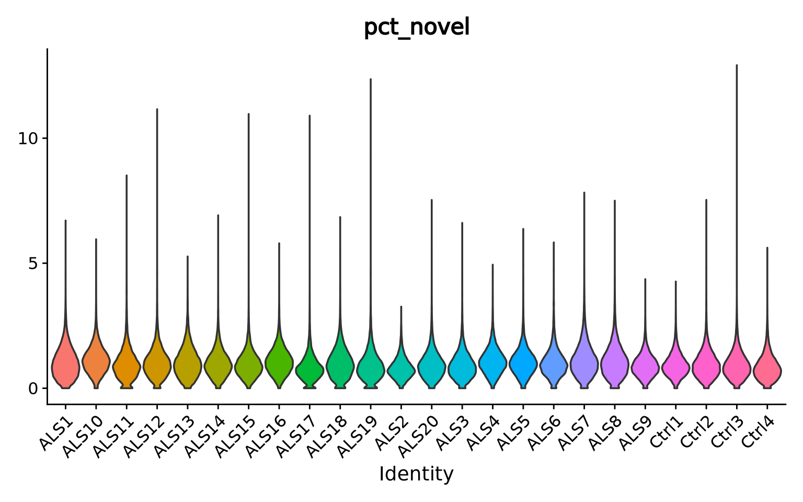
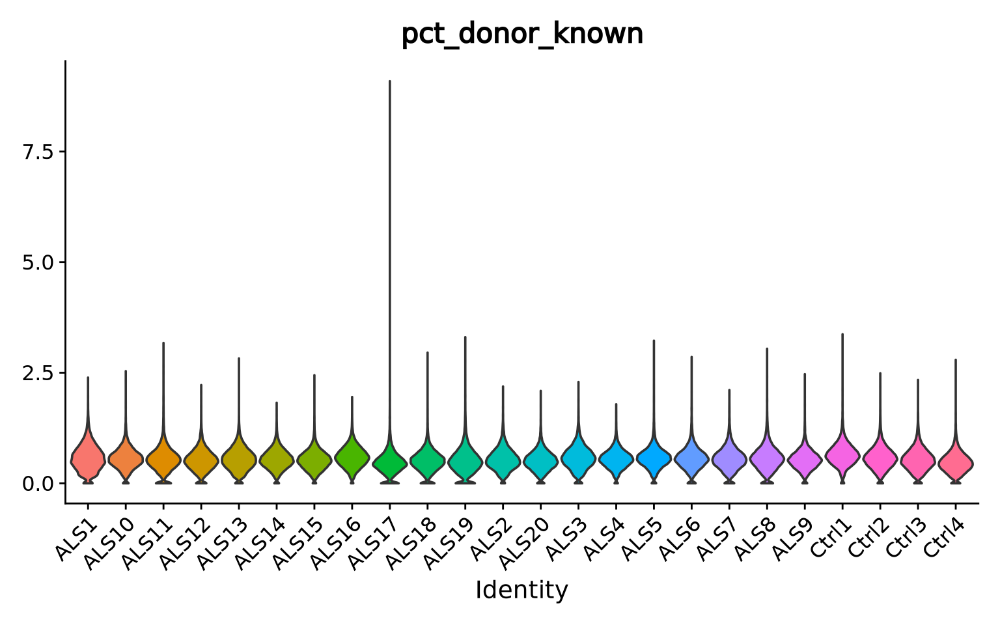
Then scatter plots: reads vs. junctions detected, and reads vs. the percentage of reads from novel junctions.
p_scatter_reads_junctions <- FeatureScatter(
seu, "nCount_RNA", "nFeature_RNA",
group.by = group_var, pt.size = 0.3
) +
scale_x_log10(labels = label_comma()) +
scale_y_log10(labels = label_comma()) +
theme_classic() +
labs(
title = "Junction reads vs junctions detected",
x = "Total junction reads (nCount_RNA)",
y = "Junctions detected (nFeature_RNA)"
)
save_plot(
p_scatter_reads_junctions, "scatter_prefilter_reads_junctions",
width = 7, height = 6, apply_theme = FALSE
)
p_scatter_reads_junctions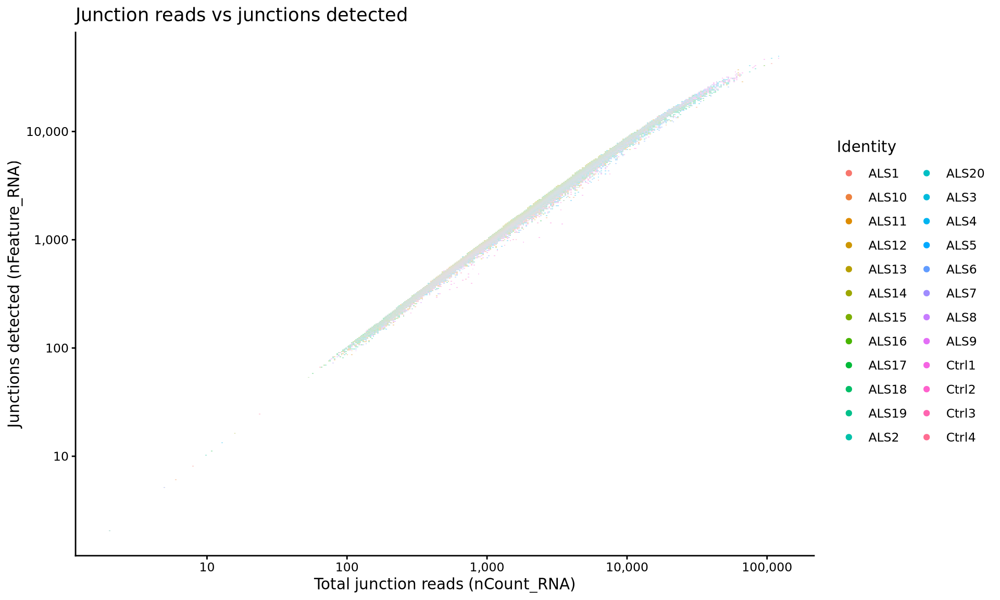
p_scatter_reads_novel <- FeatureScatter(
seu, "nCount_RNA", "pct_novel",
group.by = group_var, pt.size = 0.3
) +
scale_x_log10(labels = label_comma()) +
theme_classic() +
labs(
title = "Junction reads vs % novel junctions",
x = "Total junction reads (nCount_RNA)",
y = "% reads from novel junctions"
)
save_plot(
p_scatter_reads_novel, "scatter_prefilter_reads_novel",
width = 7, height = 6, apply_theme = FALSE
)
p_scatter_reads_novel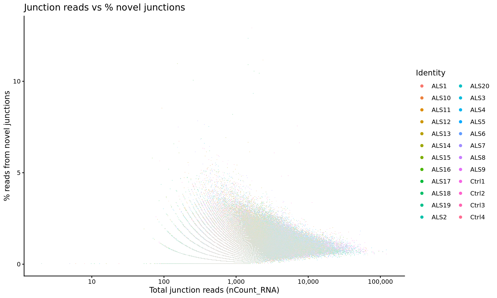
Ranked barcode plot: the total number of junction reads per nucleus, ranked within each sample.
bc_rank_df <- tibble(
nCount = seu$nCount_RNA,
group = seu@meta.data[[group_var]]
) |>
group_by(group) |>
arrange(dplyr::desc(nCount)) |>
mutate(rank = row_number()) |>
ungroup()
p_barcode_rank <- ggplot(bc_rank_df, aes(rank, nCount, colour = group)) +
geom_line(linewidth = 0.7) +
geom_hline(yintercept = min_reads, linetype = "dashed", colour = "grey40") +
annotate(
"text",
x = 1, y = min_reads * 1.3,
label = paste0("min_reads = ", min_reads),
hjust = 0, size = 3, colour = "grey30"
) +
scale_x_log10(labels = label_comma()) +
scale_y_log10(labels = label_comma()) +
labs(
x = paste0("Nucleus rank (within ", group_var, ")"),
y = "Total junction reads",
colour = group_var
) +
theme_classic()
save_plot(p_barcode_rank, "barcode_rank", width = 9, height = 6, apply_theme = FALSE)
p_barcode_rank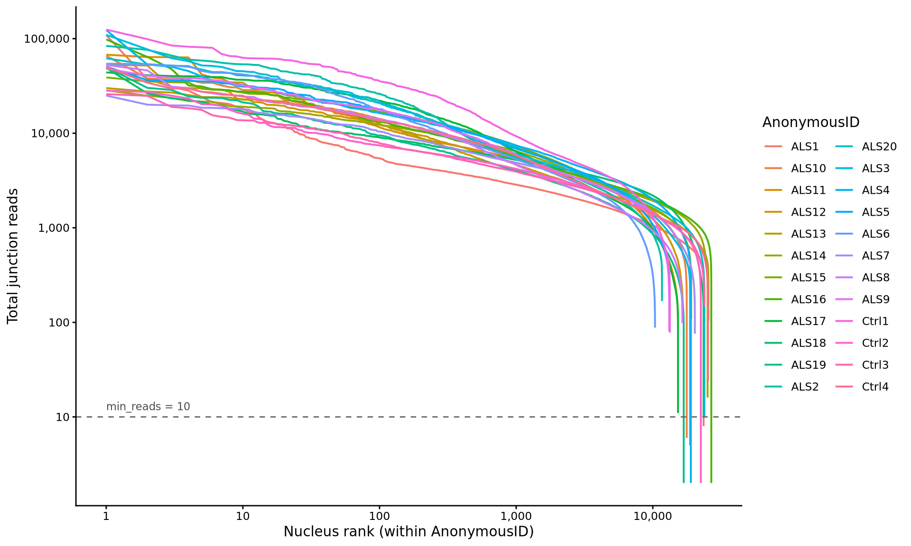
Composition of the reads per sample by annotation status of the junctions.
ann_pct_df <- seu@meta.data |>
dplyr::select(
group = dplyr::all_of(group_var),
pct_known, pct_donor_known, pct_acceptor_known, pct_novel
) |>
group_by(group) |>
summarise(
across(starts_with("pct_"), \(x) mean(x, na.rm = TRUE)),
.groups = "drop"
) |>
pivot_longer(-group, names_to = "status", values_to = "mean_pct") |>
mutate(
status = sub("pct_", "", status),
status = factor(status, levels = names(status_colours))
)
p_annotation_composition <- ggplot(ann_pct_df, aes(group, mean_pct, fill = status)) +
geom_col(width = 0.7) +
scale_fill_manual(values = status_colours, name = "Annotation") +
scale_y_continuous(
labels = label_percent(scale = 1),
expand = expansion(mult = c(0, 0.05))
) +
labs(x = group_var, y = "% reads (mean per sample)") +
theme_classic() +
theme(axis.text.x = element_text(angle = 45, hjust = 1))
save_plot(
p_annotation_composition, "annotation_status_composition",
width = 8, height = 5, apply_theme = FALSE
)
p_annotation_composition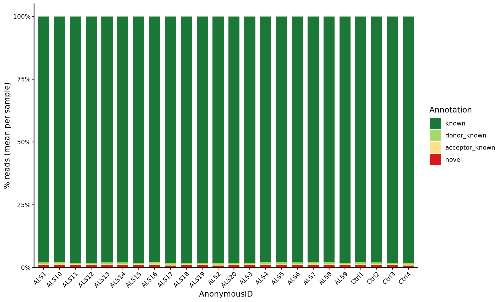
Filtering nuclei
I remove nuclei with too few or too many reads or junctions.
cat("Filtering cells...\n")Filtering cells...cat(" nFeature (junctions): [", min_junctions, ", ", max_junctions, "]\n", sep = "") nFeature (junctions): [10, 5e+05]cat(" nCount (reads): [", min_reads, ", ", max_reads, "]\n", sep = "") nCount (reads): [10, 5e+06]cells_before <- table(seu@meta.data[[group_var]])
seu_filt <- subset(
seu,
subset = nFeature_RNA >= min_junctions &
nFeature_RNA <= max_junctions &
nCount_RNA >= min_reads &
nCount_RNA <= max_reads
)
cells_after <- table(seu_filt@meta.data[[group_var]])
pct_kept <- round(sum(cells_after) / sum(cells_before) * 100, 1)
cat(" ", sum(cells_before), " -> ", sum(cells_after),
" cells (", pct_kept, "% retained)\n", sep = "") 457114 -> 457106 cells (100% retained)# A sample without any remaining cells is missing from cells_after: make it 0
filter_df <- tibble(
group = names(cells_before),
before = as.integer(cells_before),
after = replace_na(as.integer(cells_after[names(cells_before)]), 0L)
) |>
pivot_longer(c("before", "after"), names_to = "stage", values_to = "cells") |>
mutate(stage = factor(stage, levels = c("before", "after")))
# The unfiltered object is not needed anymore
rm(seu); gc() used (Mb) gc trigger (Mb) max used (Mb)
Ncells 5915512 316.0 10610771 566.7 10610771 566.7
Vcells 1364907399 10413.5 4328143179 33021.2 4700112265 35859.1p_filter <- ggplot(filter_df, aes(group, cells, fill = stage)) +
geom_col(position = "dodge") +
geom_text(
aes(label = label_comma()(cells)),
position = position_dodge(width = 0.9),
hjust = -0.1, size = 3, angle = 90
) +
scale_fill_manual(values = c("before" = "#90CAF9", "after" = "#1565C0")) +
scale_y_continuous(
labels = label_comma(),
expand = expansion(mult = c(0, 0.12))
) +
labs(x = group_var, y = "Number of nuclei", fill = NULL) +
theme_classic() +
theme(axis.text.x = element_text(angle = 45, hjust = 1))
save_plot(p_filter, "filter_summary", width = 8, height = 5, apply_theme = FALSE)
p_filter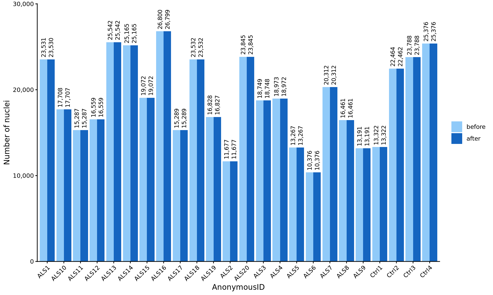
Post-filter QC
qc_vln_post <- map(
qc_features,
\(feature) {
VlnPlot(seu_filt, features = feature, group.by = group_var, pt.size = 0) +
theme(legend.position = "none")
}
) |>
set_names(qc_features)
walk2(
qc_vln_post, names(qc_vln_post),
\(p, feature) {
save_plot(p, paste0("violin_postfilter_", feature),
width = 8, height = 5, apply_theme = FALSE)
}
)
print_tabset(qc_vln_post)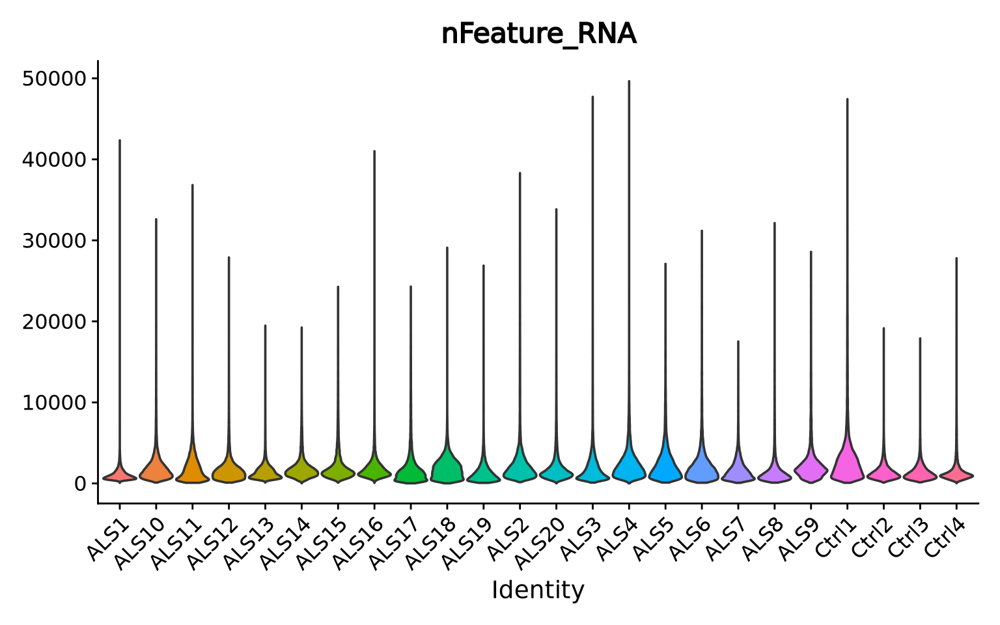
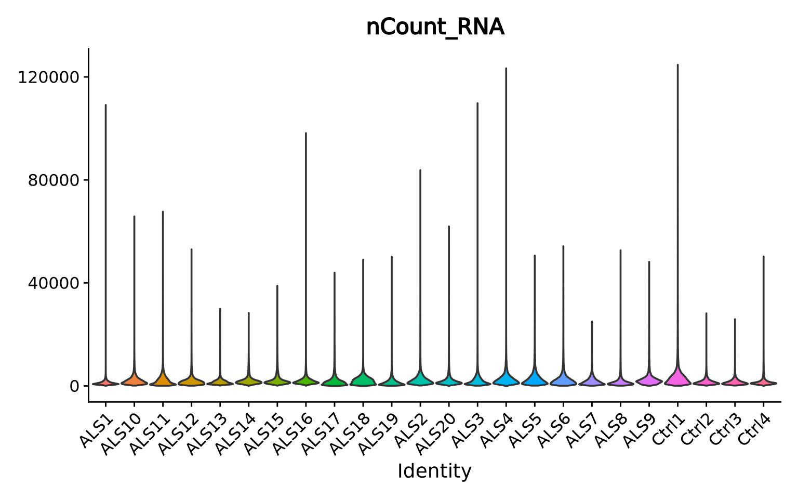
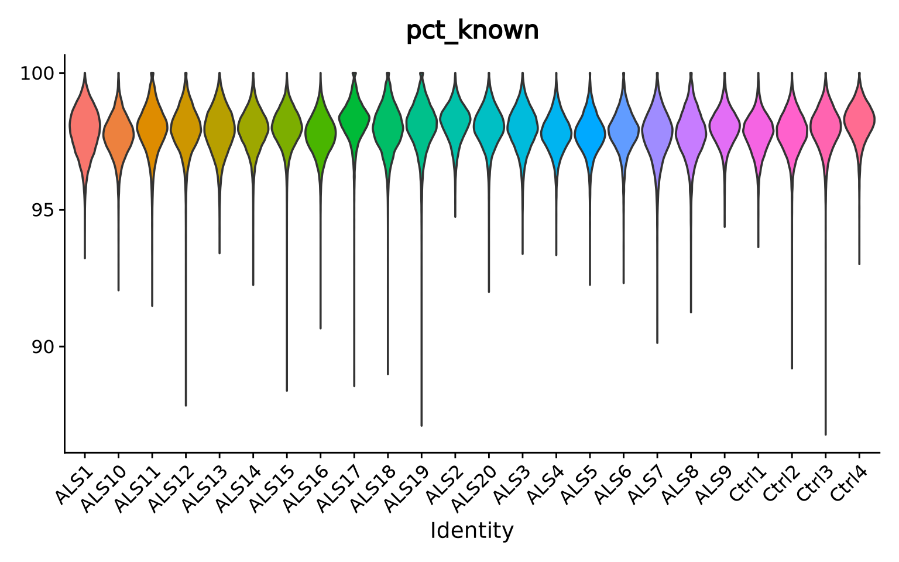
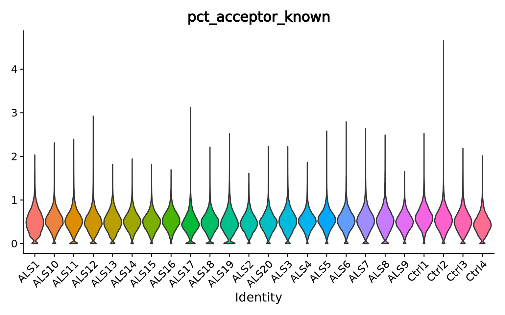
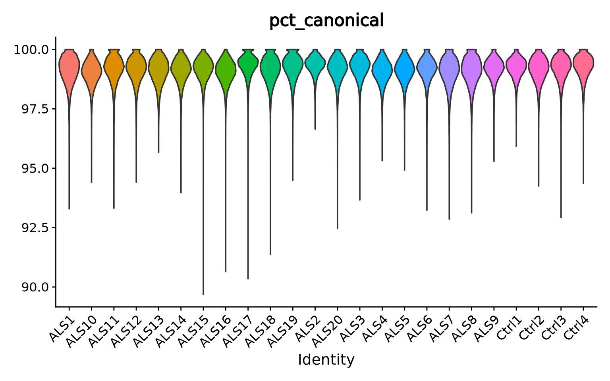
Saving the filtered Seurat object
This is a checkpoint: part 2 continues with the object in memory, but if the second half crashes (or I want to inspect all cell types) I can restart from this file.
cat("Saving Seurat object to:", file_rds_filtered, "\n")Saving Seurat object to: /path/to/folder/projects/snrna_astros_shortread_postQC/data/processed/junction_seurat_allcelltypes_filtered.rds saveRDS(seu_filt, file_rds_filtered)
cat("Done.\n")Done.Part 2: Astrocytes and gene-specific preprocessing
Selecting astrocytes
The junction Seurat contains all cell types. I only want astrocytes: the barcodes of the nuclei in the short-read astrocyte object.
cat("Loading short-read Seurat object from:", file_sr_astro, "\n")Loading short-read Seurat object from: /path/to/folder/projects/snrna_astros_shortread_postQC/data/processed/seu_shortread_astros_clustered.rds seu_sr <- readRDS(file_sr_astro)
cat(" ", ncol(seu_sr), " astrocytes in the short-read object\n", sep = "") 46933 astrocytes in the short-read object# Barcodes of the astrocytes in the short-read object
barcodes_astro <- colnames(seu_sr)
# Check how the two objects intersect
cat("Short-read astrocyte barcodes found in the junction Seurat:\n")Short-read astrocyte barcodes found in the junction Seurat:print(table(barcodes_astro %in% colnames(seu_filt)))
FALSE TRUE
237 46696 cat("Junction Seurat barcodes which are astrocytes in the short-read Seurat:\n")Junction Seurat barcodes which are astrocytes in the short-read Seurat:print(table(colnames(seu_filt) %in% barcodes_astro))
FALSE TRUE
410410 46696 seu_junctions_astro <- subset(
seu_filt,
cells = intersect(barcodes_astro, colnames(seu_filt))
)
cat("The number of astrocytes in the junction Seurat is:", ncol(seu_junctions_astro), "\n")The number of astrocytes in the junction Seurat is: 46696 # The full object is stored on disk (checkpoint), so free the memory
rm(seu_filt); gc() used (Mb) gc trigger (Mb) max used (Mb)
Ncells 6058512 323.6 10610771 566.7 10610771 566.7
Vcells 776880261 5927.2 3462514544 26416.9 4700112265 35859.1Transferring short-read information
Cluster annotation
Only the annotation column is transferred from the short-read object. All other metadata I need (e.g. condition, Gender) is already in the long-read metadata.
# Only transfer annotation if it exists
stopifnot(annotation_var %in% colnames(seu_sr@meta.data))
# All junction astrocytes are in the short-read object (they were selected
# with its barcodes), so indexing by barcode is safe
annotation_df <- seu_sr@meta.data[
Cells(seu_junctions_astro), annotation_var, drop = FALSE
]
seu_junctions_astro <- AddMetaData(seu_junctions_astro, metadata = annotation_df)
# There should not be any missing annotations, as I subsetted using the barcodes
# of this same Seurat object
cat("Missing annotations:", sum(is.na(seu_junctions_astro@meta.data[[annotation_var]])), "\n")Missing annotations: 0 print(table(seu_junctions_astro@meta.data[[annotation_var]]))
GM Astrocyte WM Astrocyte 1 WM Astrocyte 2
9424 22245 15027 Dimensionality reductions
PCA and UMAP embeddings of the short-read object are transferred to the junction object. Some nuclei were lost during QC, so I only keep the embeddings of the nuclei in the junction object.
for (reduction in reductions_to_transfer) {
emb <- Embeddings(seu_sr, reduction = reduction)
emb_subset <- emb[Cells(seu_junctions_astro), , drop = FALSE]
seu_junctions_astro[[reduction]] <- CreateDimReducObject(
embeddings = emb_subset,
key = Key(seu_sr[[reduction]]),
assay = DefaultAssay(seu_junctions_astro)
)
# Check whether it transferred correctly: embeddings in the junction object
# should be identical to the short-read ones for the same barcodes
emb_check <- Embeddings(seu_junctions_astro, reduction = reduction)
cat(
reduction, ": embeddings identical to short-read:",
isTRUE(all.equal(emb_check, emb[rownames(emb_check), colnames(emb_check)])),
"\n"
)
}pca : embeddings identical to short-read: TRUE
umap : embeddings identical to short-read: TRUE # The short-read object is not needed anymore
rm(seu_sr, emb, emb_subset, emb_check); gc() used (Mb) gc trigger (Mb) max used (Mb)
Ncells 6042793 322.8 10610771 566.7 10610771 566.7
Vcells 206185970 1573.1 2770011636 21133.6 4700112265 35859.1p_umap_annotation <- DimPlot(
seu_junctions_astro,
reduction = "umap",
group.by = annotation_var
)
save_plot(
p_umap_annotation, "umap_annotation_junction_seurat",
width = 8, height = 6, apply_theme = FALSE
)
p_umap_annotation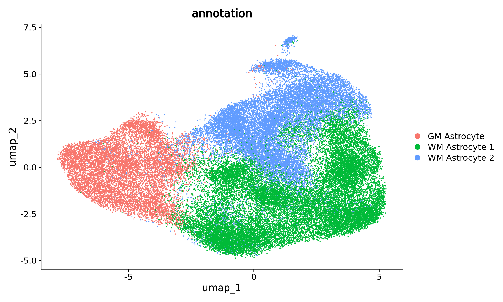
Filtering junctions within astrocytes
The current object only contains astrocytes. Some junctions might not be expressed at all in astrocytes, so I filter junctions based on a minimum number of nuclei and reads again. In the end, I only use a couple of genes, but removing the “dead” junctions is necessary for the normalisation.
mat_raw <- GetAssayData(seu_junctions_astro, layer = "counts")
junc_detected <- Matrix::rowSums(mat_raw > 0)
junc_reads <- Matrix::rowSums(mat_raw)
cat(
"Filtering junctions (min_junc_cells = ", min_junc_cells,
", min_junc_reads = ", min_junc_reads, ")\n", sep = ""
)Filtering junctions (min_junc_cells = 5, min_junc_reads = 10)junc_keep <- junc_reads >= min_junc_reads & junc_detected >= min_junc_cells
cat(
" ", nrow(mat_raw), " -> ", sum(junc_keep), " junctions (",
round(sum(junc_keep) / nrow(mat_raw) * 100, 1), "% retained)\n", sep = ""
) 513692 -> 234581 junctions (45.7% retained)seu_junctions_astro <- subset(
seu_junctions_astro,
features = rownames(mat_raw)[junc_keep]
)
rm(mat_raw, junc_keep, junc_detected, junc_reads); gc() used (Mb) gc trigger (Mb) max used (Mb)
Ncells 6063681 323.9 10610771 566.7 10610771 566.7
Vcells 327026273 2495.1 1772807448 13525.5 4700112265 35859.1Gene-specific Seurat objects
A lot happens in this loop, so let me write it out. For each gene in genes, this loop:
- selects the junctions of this gene using
junc_metaand stores the junction information as a.csv; - subsets the astrocyte Seurat to these junctions;
- removes nuclei without any reads for this gene. Because of the low read depth of long-read sequencing, many nuclei do not express any junction of a specific gene. Keeping them would cause a mathematical error in the normalisation (division by zero);
- normalises the data (TF-IDF by default [source]);
- saves the object as
data/processed/junction_seurat_<gene>.rds.
For TF-IDF normalisation I do the following:
- IDF: the log of total nuclei divided by the number of nuclei in which a junction is detected. A junction detected in most nuclei gets a low number, a junction detected in only a few nuclei gets a high number.
- TF: the raw matrix is multiplied by a diagonal matrix which divides every value in a column by the column total (
%*%is matrix multiplication). In effect: what fraction of this nucleus’ junction reads comes from each junction? - TF-IDF: every junction’s TF row is multiplied by its IDF. The scale factor is applied before the log to keep values out of the log’s dead zone, just like Seurat’s
LogNormalize()does.
gene_summary <- list()
for (gene in genes) {
cat("## For loop on gene:", gene, "\n")
# Junction information of this gene. Some entries in the gene_name column
# have the format "ENSEMBLID, SYMBOL", so I use str_detect() instead of ==
gene_junctions_df <- junc_meta |>
dplyr::filter(str_detect(gene_name, gene))
# Store the meta-information of the junctions of this gene, so I can still
# inspect it later if I want to
file_csv <- file.path(dir_tab, paste0("junction_meta_", gene, ".csv"))
write_csv(gene_junctions_df, file_csv)
# Junctions of this gene which survived the filtering steps
gene_junctions <- intersect(
gene_junctions_df$junction_id,
rownames(seu_junctions_astro)
)
cat(" ", nrow(gene_junctions_df), " annotated junctions, ",
length(gene_junctions), " left after filtering\n", sep = "")
if (length(gene_junctions) == 0) {
cat(" No junctions left for", gene, "- skipping this gene\n")
next
}
seu_gene <- subset(seu_junctions_astro, features = gene_junctions)
## Remove empty cells for this specific gene ---------------------------------
cat("Filtering out empty cells for", gene, "\n")
n_cells_total <- ncol(seu_gene)
# Boolean column: does this nucleus have reads for any junction of this gene?
mat_raw <- GetAssayData(seu_gene, layer = "counts")
seu_gene$has_gene <- Matrix::colSums(mat_raw) >= min_cell_gene
cat("The number of cells with junctions for this gene is:\n")
print(table(seu_gene$has_gene))
cat("And per cluster:\n")
print(table(
has_gene = seu_gene$has_gene,
annotation = seu_gene@meta.data[[annotation_var]]
))
if (sum(seu_gene$has_gene) == 0) {
cat(" No cells express", gene, "- skipping this gene\n")
next
}
seu_gene <- subset(seu_gene, subset = has_gene) # has_gene is a Boolean
## Normalisation -------------------------------------------------------------
# IMPORTANT: extract the counts AFTER removing the empty cells. In the R
# script, mat_raw was extracted before the removal. The empty cells then
# had a column total of 0 (1 / 0 = Inf in the TF step) and the dimensions
# of the TF-IDF matrix did not match those of the Seurat object.
mat_raw <- GetAssayData(seu_gene, layer = "counts")
if (norm_method == "tfidf") {
cat("Normalising (TF-IDF, scale.factor =", tfidf_scale_factor, ")\n")
idf <- log(1 + ncol(mat_raw) / Matrix::rowSums(mat_raw > 0))
tf <- mat_raw %*% Matrix::Diagonal(x = 1 / Matrix::colSums(mat_raw))
tfidf <- log1p(Matrix::Diagonal(x = idf * tfidf_scale_factor) %*% tf)
# Matrix multiplication with a Diagonal() matrix can lose the dimnames
dimnames(tfidf) <- dimnames(mat_raw)
# Sanity checks before putting it in the Seurat object
stopifnot(
identical(dim(tfidf), dim(mat_raw)),
identical(rownames(tfidf), rownames(seu_gene)),
identical(colnames(tfidf), colnames(seu_gene)),
all(is.finite(tfidf@x))
)
# Set the normalised matrix as 'data', as this is also where
# LogNormalize() stores the normalised data.
seu_gene <- SetAssayData(seu_gene, layer = "data", new.data = tfidf)
rm(idf, tf, tfidf)
} else if (norm_method == "lognorm") {
seu_gene <- NormalizeData(seu_gene, verbose = FALSE)
} else {
stop("You did not provide an available normalization method. Choose 'tfidf' or 'lognorm'")
}
# Store the normalisation method in the object, so 09 and 10 can report it
seu_gene@misc$normalization <- norm_method
## Save to disk --------------------------------------------------------------
file_rds_gene <- file.path(dir_data, paste0("junction_seurat_", gene, ".rds"))
cat("Saving Seurat object to:", file_rds_gene, "\n")
saveRDS(seu_gene, file_rds_gene)
cat("Seurat saved!\n")
gene_summary[[gene]] <- tibble(
gene = gene,
n_junctions = nrow(seu_gene),
n_cells_before_filter = n_cells_total,
n_cells_with_gene = ncol(seu_gene),
normalisation = norm_method
)
rm(seu_gene, mat_raw); gc()
}## For loop on gene: GFAP
98 annotated junctions, 79 left after filtering
Filtering out empty cells for GFAP
The number of cells with junctions for this gene is:
FALSE TRUE
18064 28632
And per cluster:
annotation
has_gene GM Astrocyte WM Astrocyte 1 WM Astrocyte 2
FALSE 5389 8522 4153
TRUE 4035 13723 10874
Normalising (TF-IDF, scale.factor = 10000 )
Saving Seurat object to: /path/to/folder/projects/snrna_astros_shortread_postQC/data/processed/junction_seurat_GFAP.rds
Seurat saved!
## For loop on gene: ANXA11
19 annotated junctions, 17 left after filtering
Filtering out empty cells for ANXA11
The number of cells with junctions for this gene is:
FALSE TRUE
45289 1407
And per cluster:
annotation
has_gene GM Astrocyte WM Astrocyte 1 WM Astrocyte 2
FALSE 9294 21599 14396
TRUE 130 646 631
Normalising (TF-IDF, scale.factor = 10000 )
Saving Seurat object to: /path/to/folder/projects/snrna_astros_shortread_postQC/data/processed/junction_seurat_ANXA11.rds
Seurat saved!
## For loop on gene: CRYAB
19 annotated junctions, 12 left after filtering
Filtering out empty cells for CRYAB
The number of cells with junctions for this gene is:
FALSE TRUE
27859 18837
And per cluster:
annotation
has_gene GM Astrocyte WM Astrocyte 1 WM Astrocyte 2
FALSE 7416 12068 8375
TRUE 2008 10177 6652
Normalising (TF-IDF, scale.factor = 10000 )
Saving Seurat object to: /path/to/folder/projects/snrna_astros_shortread_postQC/data/processed/junction_seurat_CRYAB.rds
Seurat saved!Summary of the gene-specific objects:
bind_rows(gene_summary) |>
kable()| gene | n_junctions | n_cells_before_filter | n_cells_with_gene | normalisation |
|---|---|---|---|---|
| GFAP | 79 | 46696 | 28632 | tfidf |
| ANXA11 | 17 | 46696 | 1407 | tfidf |
| CRYAB | 12 | 46696 | 18837 | tfidf |
Session info
I used the conda environment r_scrnaseq_core to run this script. You can find major package versions in the file /environments/r_scrnaseq_core.yml, but for full reproducibility, I’ll display all dependencies and package versions below.
sessionInfo()R version 4.4.3 (2025-02-28)
Platform: x86_64-conda-linux-gnu
Running under: Rocky Linux 8.10 (Green Obsidian)
Matrix products: default
BLAS/LAPACK: /path/to/folder/software/miniforge/miniforge3/envs/r_scrnaseq_core/lib/libopenblasp-r0.3.34.so; LAPACK version 3.12.0
locale:
[1] LC_CTYPE=en_US.UTF-8 LC_NUMERIC=C
[3] LC_TIME=en_US.UTF-8 LC_COLLATE=en_US.UTF-8
[5] LC_MONETARY=en_US.UTF-8 LC_MESSAGES=en_US.UTF-8
[7] LC_PAPER=en_US.UTF-8 LC_NAME=C
[9] LC_ADDRESS=C LC_TELEPHONE=C
[11] LC_MEASUREMENT=en_US.UTF-8 LC_IDENTIFICATION=C
time zone: Europe/Amsterdam
tzcode source: system (glibc)
attached base packages:
[1] stats graphics grDevices utils datasets methods base
other attached packages:
[1] scales_1.4.0 Matrix_1.7-6 Seurat_5.5.1 SeuratObject_5.4.0
[5] sp_2.2-3 here_1.0.2 knitr_1.52 patchwork_1.3.2
[9] lubridate_1.9.5 forcats_1.0.1 stringr_1.6.0 dplyr_1.2.1
[13] purrr_1.2.2 readr_2.2.0 tidyr_1.3.2 tibble_3.3.1
[17] ggplot2_4.0.3 tidyverse_2.0.0
loaded via a namespace (and not attached):
[1] RColorBrewer_1.1-3 jsonlite_2.0.0 magrittr_2.0.5
[4] spatstat.utils_3.2-5 ggbeeswarm_0.7.3 farver_2.1.2
[7] rmarkdown_2.32 ragg_1.5.2 vctrs_0.7.3
[10] ROCR_1.0-12 spatstat.explore_3.8-2 htmltools_0.5.9
[13] sctransform_0.4.3 parallelly_1.48.0 KernSmooth_2.23-27
[16] htmlwidgets_1.6.4 ica_1.0-3 plyr_1.8.9
[19] plotly_4.12.1 zoo_1.9-0 igraph_2.3.3
[22] mime_0.13 lifecycle_1.0.5 pkgconfig_2.0.3
[25] R6_2.6.1 fastmap_1.2.0 fitdistrplus_1.2-6
[28] future_1.76.0 shiny_1.14.0 digest_0.6.39
[31] rprojroot_2.1.1 tensor_1.5.1 RSpectra_0.16-2
[34] irlba_2.3.7 textshaping_1.0.5 labeling_0.4.3
[37] progressr_1.0.0 spatstat.sparse_3.2-0 timechange_0.4.0
[40] httr_1.4.9 polyclip_1.10-7 abind_1.4-8
[43] compiler_4.4.3 bit64_4.8.6 withr_3.0.3
[46] S7_0.2.2 fastDummies_1.7.6 R.utils_2.13.0
[49] MASS_7.3-66 tools_4.4.3 vipor_0.4.7
[52] lmtest_0.9-40 otel_0.2.0 beeswarm_0.4.0
[55] httpuv_1.6.17 future.apply_1.20.2 goftest_1.2-3
[58] R.oo_1.27.1 glue_1.8.1 nlme_3.1-170
[61] promises_1.5.0 grid_4.4.3 Rtsne_0.17
[64] cluster_2.1.8.3 reshape2_1.4.5 generics_0.1.4
[67] gtable_0.3.6 spatstat.data_3.1-9 tzdb_0.5.0
[70] R.methodsS3_1.8.2 data.table_1.18.6.1 hms_1.1.4
[73] spatstat.geom_3.8-2 RcppAnnoy_0.0.23 ggrepel_0.9.8
[76] RANN_2.6.2 pillar_1.11.1 spam_2.11-4
[79] RcppHNSW_0.7.0 vroom_1.7.1 later_1.4.8
[82] splines_4.4.3 lattice_0.23-1 bit_4.6.0
[85] survival_3.8-12 deldir_2.0-4 tidyselect_1.2.1
[88] miniUI_0.1.2 pbapply_1.7-4 gridExtra_2.3.1
[91] scattermore_1.2 xfun_0.60 matrixStats_1.5.0
[94] stringi_1.8.9 yaml_2.3.12 evaluate_1.0.5
[97] codetools_0.2-20 cli_3.6.6 uwot_0.2.5
[100] xtable_1.8-8 reticulate_1.47.0 systemfonts_1.3.2
[103] Rcpp_1.1.2 globals_0.19.1 spatstat.random_3.5-1
[106] png_0.1-9 ggrastr_1.0.2 spatstat.univar_3.2-0
[109] parallel_4.4.3 dotCall64_1.2 listenv_1.0.0
[112] viridisLite_0.4.3 ggridges_0.5.7 crayon_1.5.3
[115] rlang_1.3.0 cowplot_1.2.0